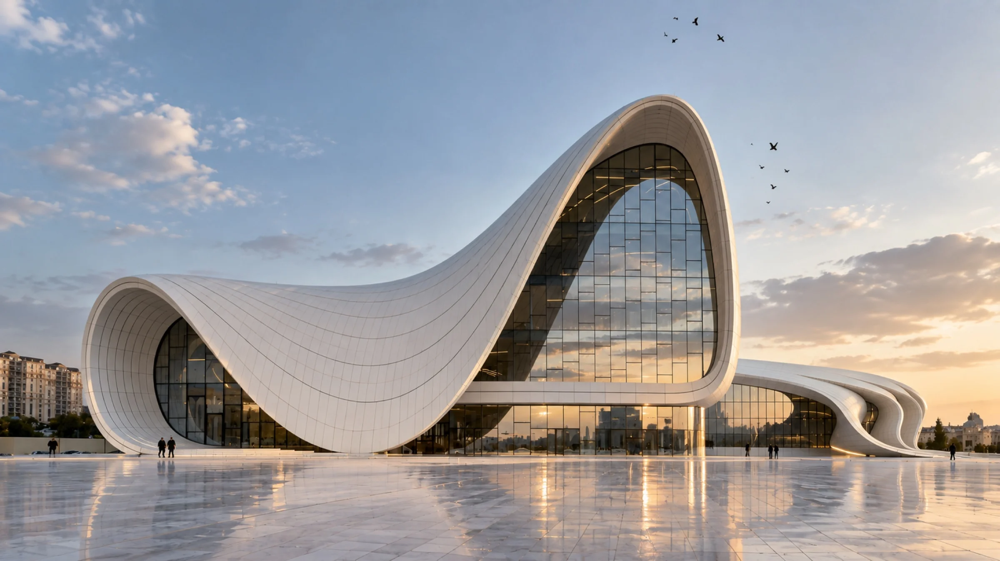
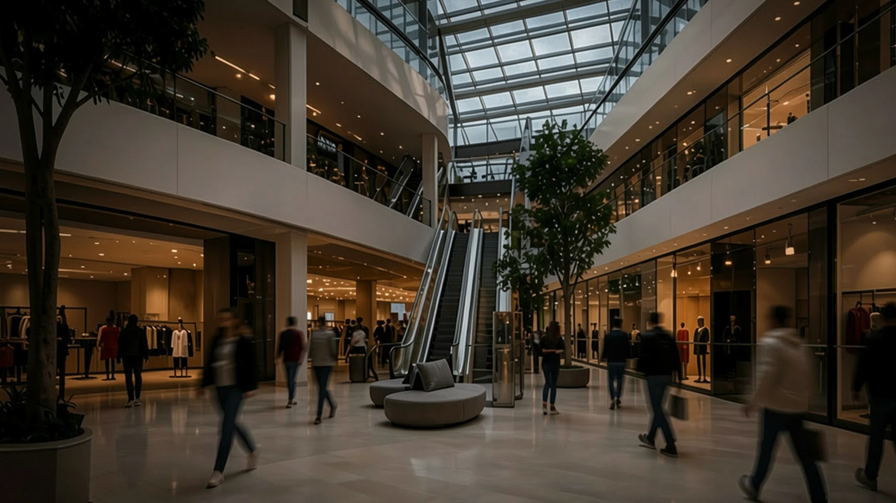
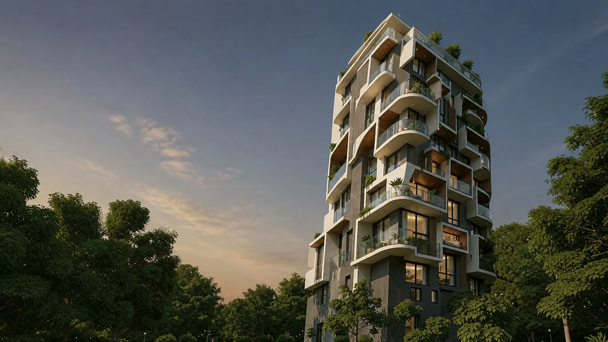
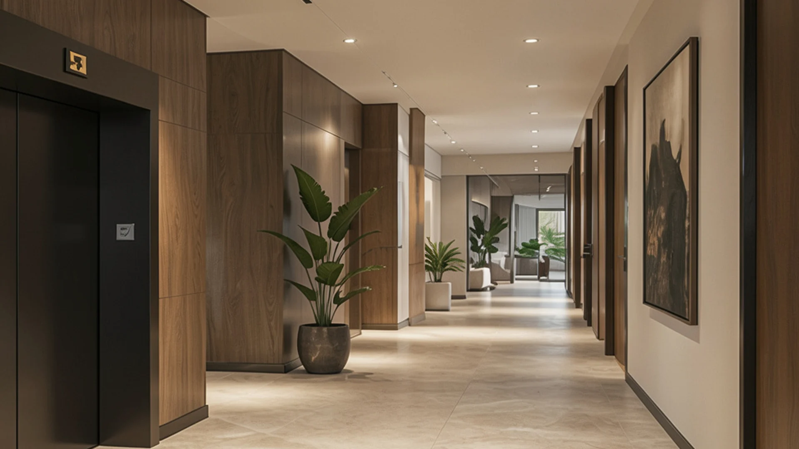
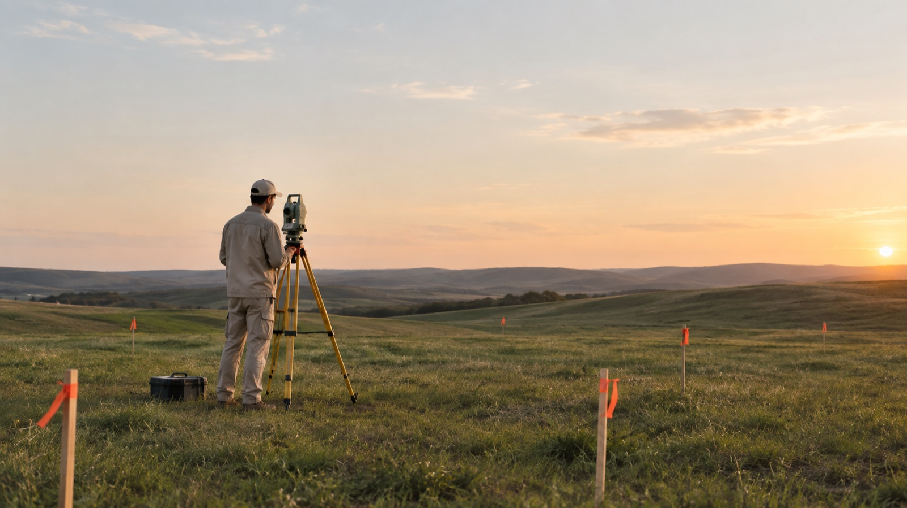

Разбираем задачу
Обсуждаем участок, сценарии жизни семьи и бюджетный ориентир. Подсказываем, с какого этапа начинать именно вам.
Архитектурное
бюро полного цикла





Архитектура делового пространства, построенная на контрасте: выразительные арки, прозрачность стекла и характер металла объединены в единый городской силуэт
Полный цикл: от первой концепции и рабочей документации до авторского надзора на площадке.
Обсуждаем участок, сценарии жизни семьи и бюджетный ориентир. Подсказываем, с какого этапа начинать именно вам.
Проверяем геологию, рельеф, инсоляцию и границы застройки — до того как вы влюбитесь в планировку.

Записываем состав помещений и приоритеты в техническое задание. Оно защищает от «а мы думали, вы это тоже делаете».
Собираем планировки, объём и логику света. Сразу проверяем решения на реализуемость в целевом бюджете.
Сводим архитектуру, конструктив и инженерию в одной модели — до стройки, а не на объекте.
Готовим отметки, узлы и спецификации, по которым подрядчик строит, а не додумывает.
Проверяем критические узлы до того, как их закроет отделка. После выезда отдаём отчёт с замечаниями и сроками.
Отдаём актуальный комплект чертежей и паспорт дома: что где проложено и как это обслуживать.
Обсуждаем участок, сценарии жизни семьи и бюджетный ориентир. Подсказываем, с какого этапа начинать именно вам.
Проверяем геологию, рельеф, инсоляцию и границы застройки — до того как вы влюбитесь в планировку.
Записываем состав помещений и приоритеты в техническое задание. Оно защищает от «а мы думали, вы это тоже делаете».
Собираем планировки, объём и логику света. Сразу проверяем решения на реализуемость в целевом бюджете.
Сводим архитектуру, конструктив и инженерию в одной модели — до стройки, а не на объекте.
Готовим отметки, узлы и спецификации, по которым подрядчик строит, а не додумывает.
Проверяем критические узлы до того, как их закроет отделка. После выезда отдаём отчёт с замечаниями и сроками.
Отдаём актуальный комплект чертежей и паспорт дома: что где проложено и как это обслуживать.
Четыре этапа с понятным составом работ. В правой колонке — что остаётся у вас на руках после каждого из них.
Изучаем ограничения участка, рельеф, инсоляцию, подъезды и сценарии жизни семьи: где работают, как приезжают гости, где хранятся вещи и как меняется дом зимой.
Собираем планировки, объём, логику света, приватности и маршрутов. Проверяем ключевые решения на реализуемость в целевом бюджете до финального утверждения.
Согласовываем архитектуру, конструктив, инженерные системы, материалы и ключевые узлы. Фиксируем отметки, спецификации и привязки, по которым подрядчик может строить.
Отвечаем на вопросы подрядчиков, выезжаем на объект, фиксируем изменения и замечания. Критические узлы проверяем до того, как их закроет отделка.
Здесь нет обещаний, за которые мы не отвечаем. Только то, что можем подтвердить процессом и документами.
До покупки участка или до выбора подрядчика. На этом этапе проще всего повлиять на ограничения и бюджет: мы посмотрим геологию, рельеф, инсоляцию и подъезды до того, как появится привязанность к конкретной планировке.
Да, мы работаем с внешними подрядчиками. Наша зона — проект и авторский контроль: помогаем прочитать сложные узлы до начала работ, отвечаем на вопросы по документации и фиксируем несоответствия в отчёте.
Нет. До геологии, проекта и состава работ честно назвать можно только диапазон и факторы, которые на него влияют: тип фундамента, конструктив, площадь остекления, инженерия и класс отделки. Мы не продаём иллюзию точной цены, чтобы потом её пересматривать.
Периодичность фиксируется договором и зависит от этапа. На ответственных работах — чаще: критические узлы проверяем до того, как их закроет отделка. После каждого выезда вы получаете отчёт с замечаниями, сроками и ответственными.
Да. Встречи и согласования проходят онлайн, образцы материалов сверяем по фото при дневном свете и дублируем очной приёмкой на объекте. Выезды на площадку в любом случае очные.
Сначала обсуждаем влияние на бюджет, срок и смежные разделы. Если изменение принимается — оно попадает в чертёж и журнал изменений, а не остаётся решением «на глаз» в переписке. В финале у вас остаётся актуальный комплект документации.
На первой встрече разберём участок, задачи семьи и подскажем, с какого этапа лучше начать.
Дубай · Барселона
по договорённости